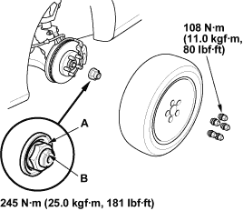
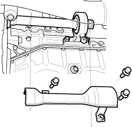
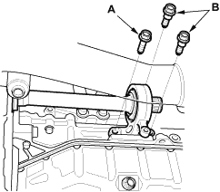

- Install a new spindle nut (A), then tighten the nut. After tightening, use a drift to stake the spindle nut shoulder (B) against the driveshaft.

- Clean the mating surfaces of the brake disc and the front wheel, then install the front wheel with the wheel nuts.
- Refill the transmission with recommended transmission fluid:
- Manual transmission (see page 13-4)
- Check the front wheel alignment and adjust it if necessary, refer to the 2001 Civic Shop Manual (see page 18-4).

- Remove the right driveshaft (see page 16-3).
- Remove the heat cover.

- Remove the flange bolt (A) and two dowel bolts (B).
